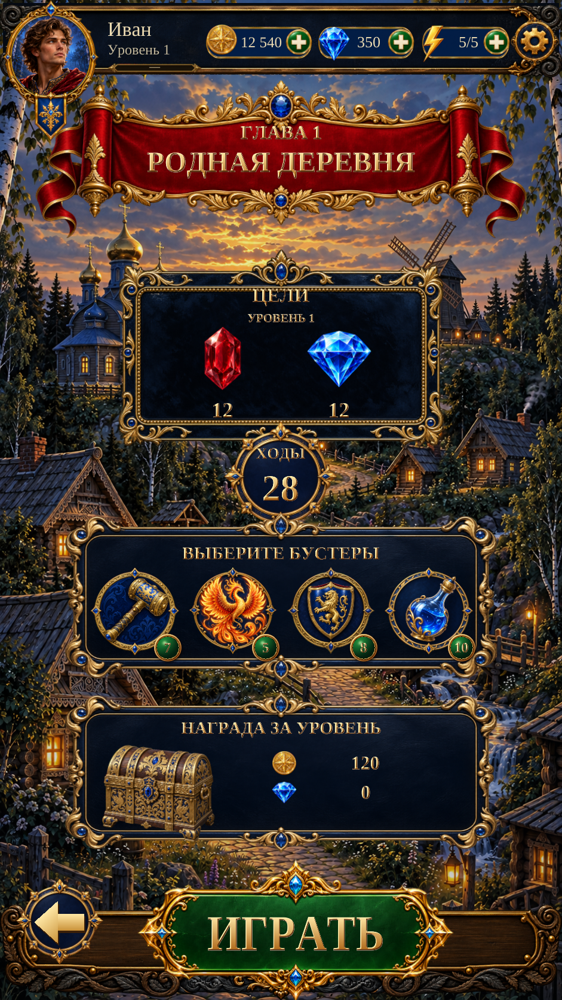

Подготовка к уровню — Pre-Level R1 review
Подготовка к уровню · Pre-Level R1
Actual Unity implementation with the accepted village scene and banner, ornate navy panels, isolated booster artwork, live level data and shared Home HUD/Play controls.
Goals, moves, first-clear rewards and booster stock reflect the selected level. The reference’s example values are replaced with actual game data. Booster icons open the existing preparation modal; pre-game loadout selection is not yet implemented.
Actual Unity Play Mode capture